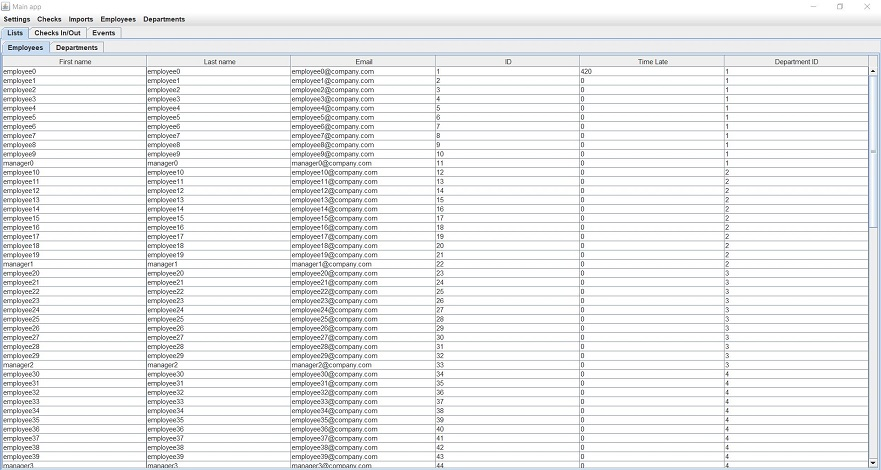

Pointeuse

Fonctionnalités
- Gestion du pointage dans une entreprise
- Gestion des employés et managers
- Pointage à travers plusieurs pointeuses
- Enregistrement des pointages en hors ligne
Contexte
- Polytech Tours
- Développement Java et Swing pour l'UI
-
Janvier à Juin 2018
-
Programmation Java orientée objet